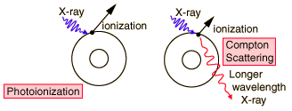

Ionizing Radiation
The practical threshold for radiation risk is that of ionization of tissue. Since the ionization energy of a hydrogen atom is 13.6 eV, the level around 10 eV is an approximate threshold. Since the energies associated with nuclear radiation are many orders of magnitude above this threshold, in the MeV range, then all nuclear radiation is ionizing radiation. Likewise, x-rays are ionizing radiation, as is the upper end of the ultraviolet range.
| All nuclear radiation must be considered to be ionizing radiation! | In addition, the upper end of the electromagnetic spectrum is ionizing radiation.

|
|
Index |